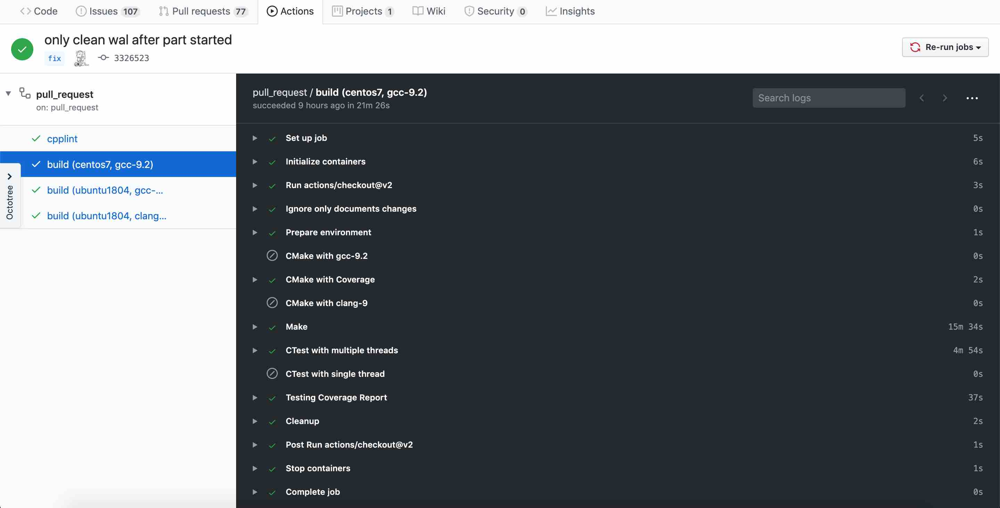
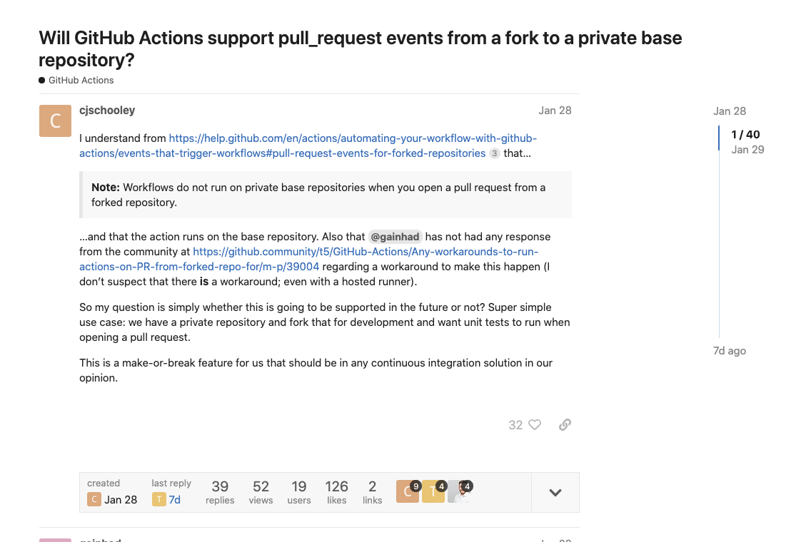
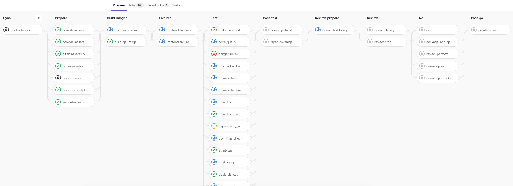
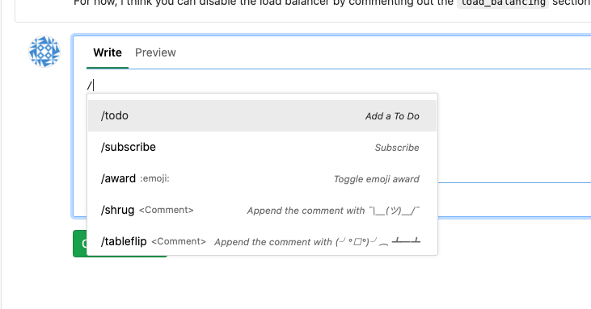
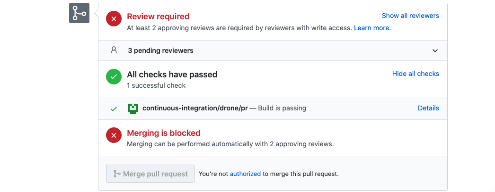
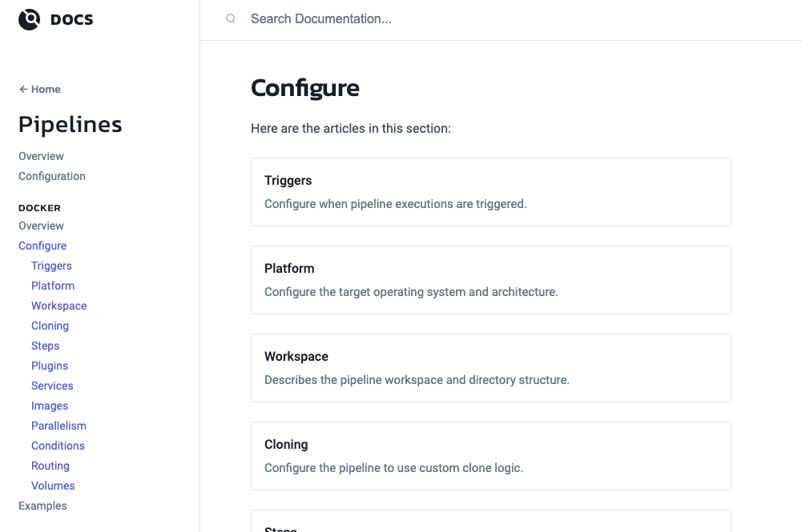

class: center, middle # GitHub Actions 2.0 --- # Agenda * GitHub Action 2.0 * Drone CI --- # GitHub Actions -- * Free for public repository -- * Open source ecosystem - action - GitHub API -- * Easy to use - [Configuration as code](https://www.jenkins.io/projects/jcasc/) -- * [GitHub-Hosted Runners](https://help.github.com/en/actions/reference/virtual-environments-for-github-hosted-runners#supported-runners-and-hardware-resources) - 2-core CPU - 7 GB of RAM memory - 14 GB of SSD disk space --- # GitHub Actions .github/workflows/build.yaml ```yaml name: build on: push: branches: - master paths-ignore: - 'docs/**' - '**.md' jobs: build: name: build runs-on: ubuntu-latest container: image: vesoft/nebula-dev:latest steps: - uses: actions/checkout@v1 - name: CMake with gcc-9.2 run: cmake -DCMAKE_BUILD_TYPE=Release -B build/ ``` ??? workflow 1.0 examples --- # Core concepts * [Action](https://github.com/marketplace?type=actions&query=checkout) * Workflow * Event * Job * Step * Runner * [Artifact](https://github.com/vesoft-inc/nebula/actions/runs/118208053) ??? https://help.github.com/en/actions/getting-started-with-github-actions/core-concepts-for-github-actions --- # [Actions](https://github.com/vesoft-inc/nebula/runs/715728323?check_suite_focus=true)  --- # [Creating Actions](https://help.github.com/en/actions/creating-actions) - Docker container action - Javascript action -- ```yaml # action.yml name: 'Hello World' description: 'Greet someone and record the time' inputs: who-to-greet: # id of input description: 'Who to greet' required: true default: 'World' outputs: time: # id of output description: 'The time we greeted you' runs: using: 'docker' image: 'Dockerfile' args: - ${{ inputs.who-to-greet }} ``` -- ```bash #!/bin/sh -l # docker run --rm -ti container who-to-greet echo "Hello $1" time=$(date) echo "::set-output name=time::$time" ``` --- # Workflow Commands -- Share values between steps ```bash $ echo "::set-output name={name}::{value}" $ echo "::set-env name={name}::{value}" $ echo "::add-path::{path}" $ echo "::debug::Set the Octocat variable" $ echo "::warning file=app.js,line=1,col=5::Missing semicolon" ... ``` --- # bot engineer - [GitHub Go SDK](https://github.com/google/go-github) - [DingTalk](https://github.com/google/go-github) - [Jira](https://github.com/andygrunwald/go-jira) - [Slack SDK](https://github.com/slack-go/slack) --- # Self-Hosted Runner * Network Isolation * VM deployment * Share Machine -- ```bash $ docker run --rm -it -v $PWD:$PWD -w $PWD vesoft/nebula-dev:centos7 bash ``` -- But, I want to run action locally -- - [act](https://github.com/nektos/act) --- # Use Case - [rpm/deb packaging](https://github.com/vesoft-inc/nebula/actions/runs/118208053) - [Build docker image nightly](https://hub.docker.com/u/vesoft) - [Upload assets when releasing](https://github.com/vesoft-inc/nebula/releases) - PR testing --- # Reference * https://help.github.com/en/actions -- Security - `${{ GITHUB_TOKEN }}` - `${{ secrets.YOUR_TOKEN }}` for PR --- # Drone CI [Will GitHub Actions support pull_request events from a fork to a private base repository?](https://github.community/t/will-github-actions-support-pull-request-events-from-a-fork-to-a-private-base-repository/17471)  --- # GitLab CI/CD -- Pipeline  ??? [Quick Action](https://gitlab.com/help/user/project/quick_actions) .center[  ] --- # Drone CI [.drone.yml](https://github.com/vesoft-inc-private/nebula/blob/master/.drone.yml) ```yaml --- kind: pipeline type: docker name: gcc_build steps: - name: lint image: vesoft/nebula-dev:ubuntu1804 commands: - ln -snf $PWD/.linters/cpp/hooks/pre-commit.sh $PWD/.linters/cpp/pre-commit.sh - .linters/cpp/pre-commit.sh $(git --no-pager diff --diff-filter=d --name-only HEAD^ HEAD) - name: gcc_build image: vesoft/nebula-dev:ubuntu1804 commands: - ./ci/deploy.sh - mkdir build && cd build - cmake -DCMAKE_CXX_COMPILER=g++ -DCMAKE_C_COMPILER=gcc -DCMAKE_BUILD_TYPE=Debug -DENABLE_TESTING=on .. - make -j $(nproc) - ctest -j $(nproc) --timeout 400 --output-on-failure depends_on: - lint ``` --- # Drone CI http://drone.nebula-graph.io:5010  [For Example](http://drone.nebula-graph.io/vesoft-inc-private/nebula-common/64) --- # Drone CI Configuration https://docs.drone.io/pipeline/docker/syntax/  --- class:center,middle # That's all! 🙏